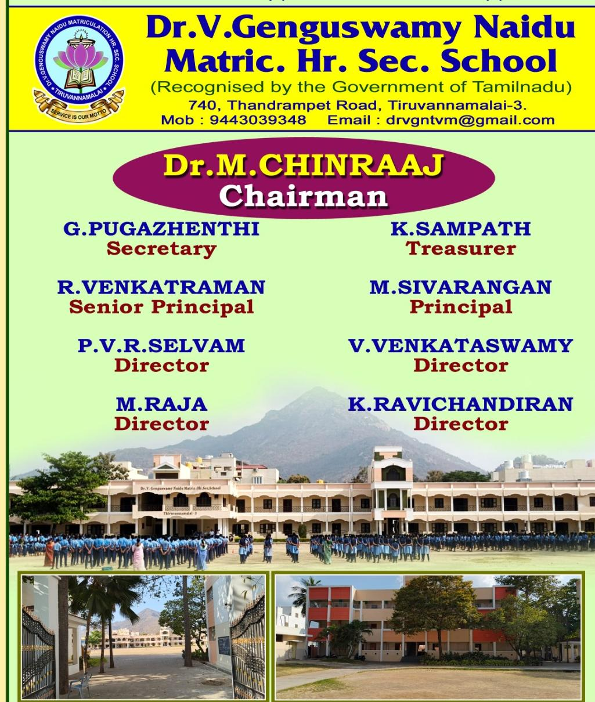
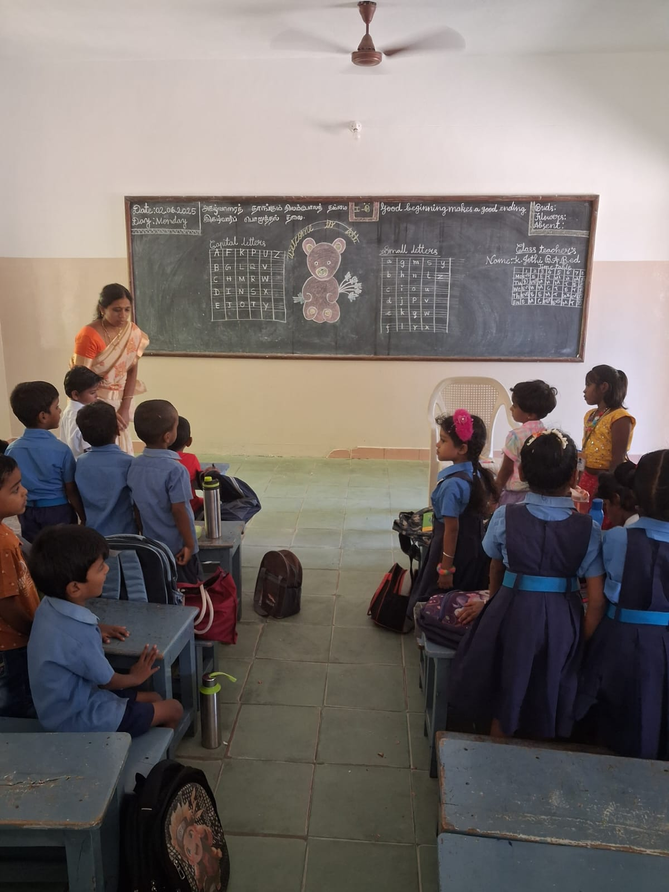
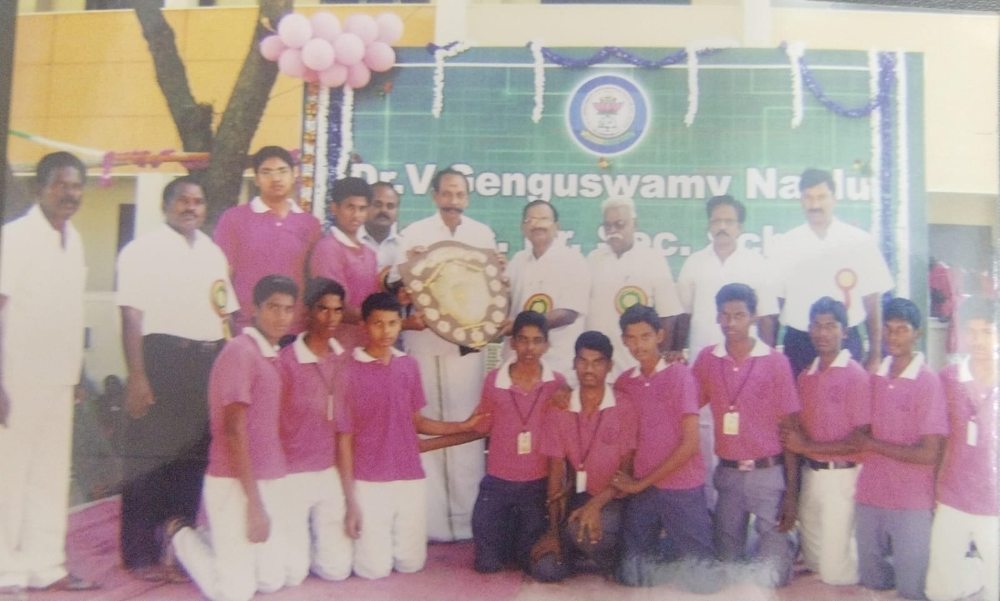
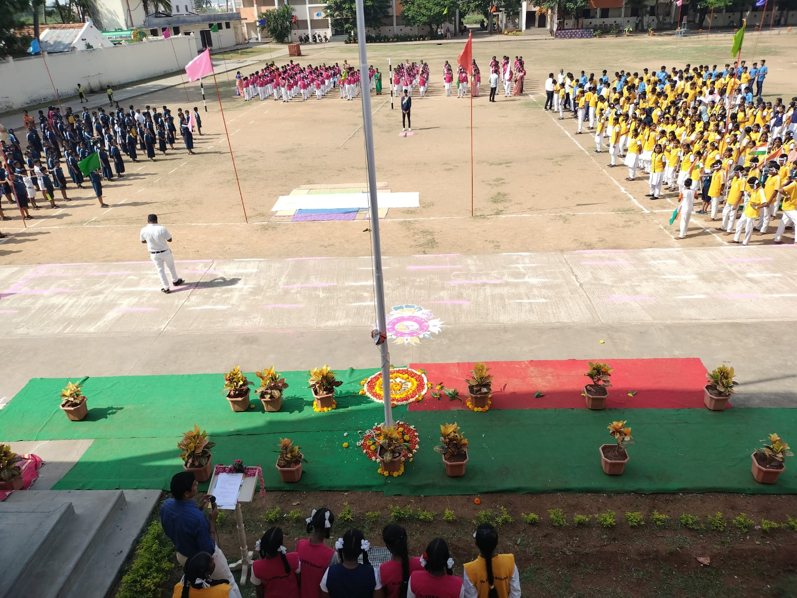
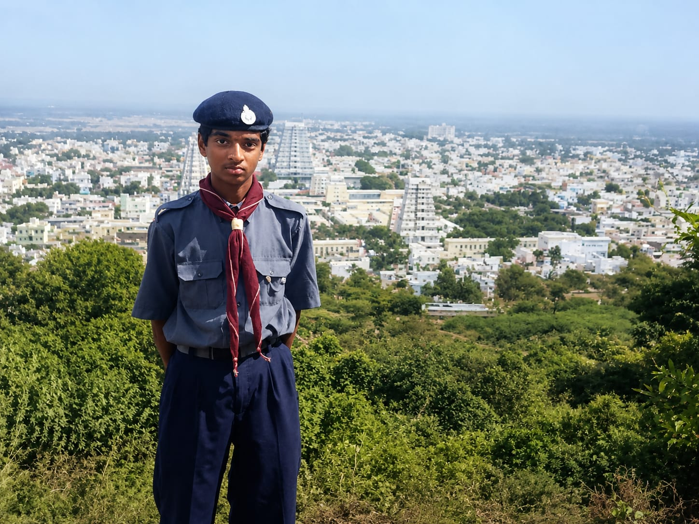
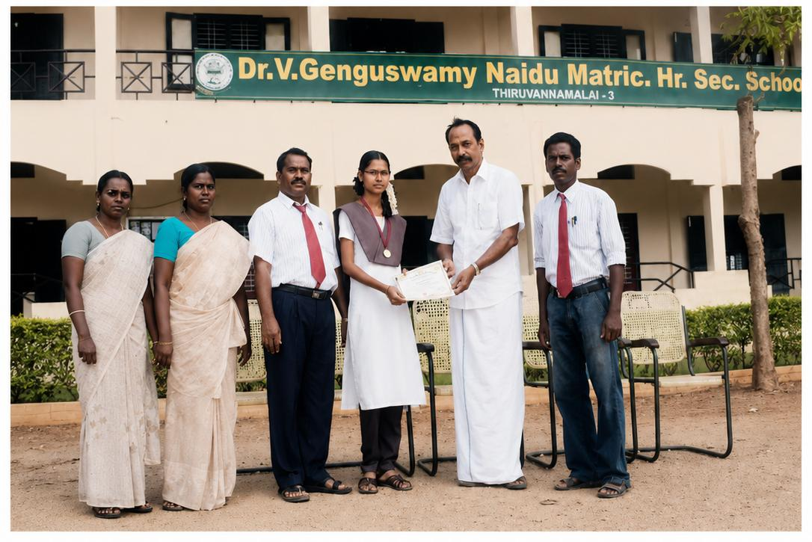
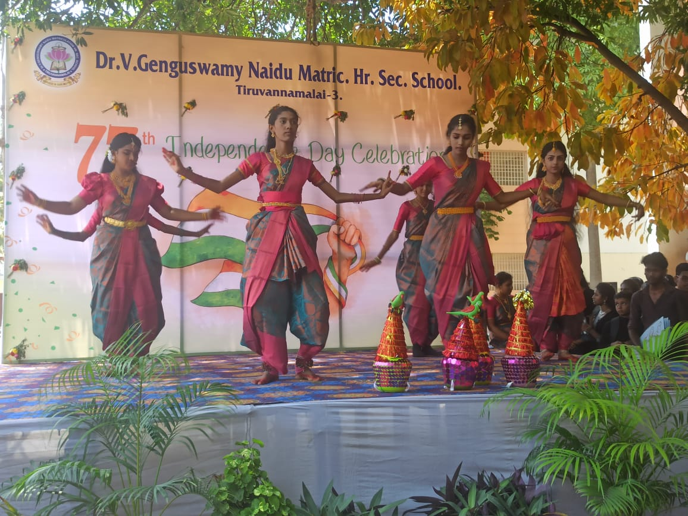

Dr. V. GENGUSWAMY NAIDU
Matriculation Higher Secondary School
740, Thandrampet Road, Tiruvannamalai - 606603
ADMISSION OPEN
LKG to XII - 2026
740, Thandrampet Road, Tiruvannamalai - 606603
LKG to XII - 2026
Building Future Leaders With Knowledge & Discipline
Our school takes pride in its outstanding academic achievements, excellent public examination results, district-level toppers, co-curricular excellence, and the continuous success of students in sports, cultural activities, and leadership development.
Admissions are now open for the academic year 2026–2027 from Kindergarten to Higher Secondary, providing students with quality education, modern learning facilities, and a nurturing environment for academic and personal growth.

Welcome to Dr. V. Genguswamy Naidu Matriculation Higher Secondary School, Tiruvannamalai, a prestigious institution committed to academic excellence, discipline, and holistic development. Since its establishment in 1993, our school has been dedicated to nurturing young minds with quality education, strong moral values, and modern learning practices. With experienced faculty members, excellent infrastructure, smart learning facilities, and a student-friendly environment, we strive to inspire every child to achieve success in academics, leadership, sports, and life. Our mission is to create confident, responsible, and future-ready individuals who contribute positively to society and uphold the values of knowledge, integrity, and service.
Our school, established in 1993 and located in the heart of the city, has consistently achieved remarkable academic excellence over the years. Students from our institution regularly secure top ranks in district-level public examinations and have also earned recognition at the state level, bringing pride and honor to both the school and parents through their outstanding achievements. Beyond academics, our students have excelled in higher education and professional careers, with many alumni serving successfully in the fields of medicine(MBBS), engineering, and leading multinational companies. Several students from our school are pursuing higher education in prestigious institutions such as NIT Jaipur, NIT Trichy,Bharathidasan Institute of Management, Anna University, and other top engineering colleges across Tamil Nadu, and many Government jobs, Doctors reflect the strong educational foundation and values nurtured by our institution.










LKG To XII Admissions Open For 2026 - 2027
Apply NowDr. V. Genguswamy Naidu School
740, Thandrampet Road, Tiruvannamalai - 606603
📞 9443049249
📧 drvgnschool@gmail.com